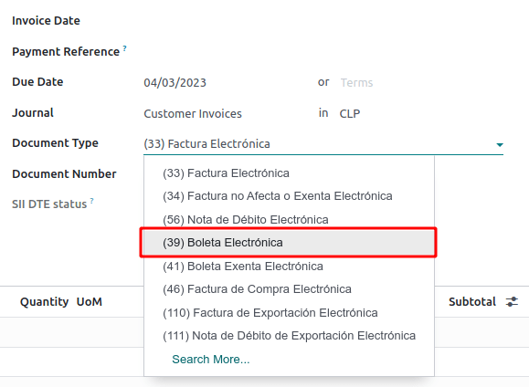
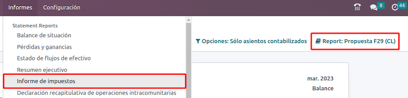

Chile¶
Tip
Watch the two webinar recordings below for a general presentation of the localization, and search the playlist for tutorials to discover practical workflows while using Odoo in Chile.
Modules¶
Install the following modules to utilize all the features of the Chilean localization.
Name |
Technical name |
Description |
|---|---|---|
Chile - Accounting |
|
Adds the minimal accounting features required for a company to operate in Chile under the SII regulations and guidelines. |
Chile - Accounting Reports |
|
Adds the Propuesta F29 and Balance Tributario (8 columnas) reports. |
Chile - E-invoicing |
|
Includes all technical and functional requirements to generate and receive electronic invoices online based on the SII regulations. |
Chile - Electronic Receipt |
|
Includes all technical and functional requirements to generate and receive electronic invoices digitally based on the SII regulations. |
Electronic Exports of Goods for Chile |
|
Includes technical and functional requirements to generate electronic invoices for exporting goods based on the SII and customs regulations. |
Chile - E-Invoicing Delivery Guide |
|
Includes all technical and functional requirements to generate delivery guides via web service based on the SII regulations. |
Note
Odoo automatically installs the appropriate package for the company according to the country selected at the creation of the database.
The Chile - E-Invoicing Delivery Guide module depends on the Inventory application.
Important
All features are only available if the company already completed the SII Sistema de Facturación de Mercado certification process.
Company information¶
Navigate to and ensure the following company information is up-to-date and correctly filled in:
Company Name
Address:
Street
City
State
ZIP
Country
Tax ID: enter the identification number for the selected Taxpayer Type.
Activity Names: select up to four activity codes.
Company Activity Description: enter a short description of the company’s activity.
Accounting settings¶
Next, navigate to and follow the instructions to configure the:
Fiscal information¶
Configure the following Tax payer information:
Taxpayer Type by selecting the taxpayer type that applies:
VAT Affected (1st Category): for invoices that charge taxes to customers
Fees Receipt Issuer (2nd Category): for suppliers who issue fees receipt (Boleta)
End consumer: only issues receipts
Foreigner
SII Office: select your company’s SII regional office
Electronic invoice data¶
Select your SII Web Services environment:
SII - Test: for test databases using test CAFs obtained from the SII. In this mode, the direct connection flows can be tested, with the files being sent to the SII.
SII - Production: for production databases.
SII - Demo Mode: files are created and accepted automatically in demo mode but are not sent to the SII. For this reason, rejection errors or Accepted with Objections will not appear in this mode. Every internal validation can be tested in demo mode. Avoid selecting this option in a production database.
Then, enter the Legal Electronic Invoicing Data:
SII Resolution N°
SII Resolution Date

DTE incoming email server¶
The DTE Email Box Electronic Invoicing can be defined to receive your customers’ claim and acceptance emails. Enabling this option from is necessary if you want to use Email Box Electronic Invoicing as the DTE incoming email server.
Important
In order to receive your SII documents, it’s necessary to set up your own email server. More information on how to do this can be found in this documentation: Send and receive emails in Odoo with an email server
Begin by clicking Configure DTE Incoming Email, then click New to add a server and fill in the following fields:
Name: give the server a name.
Server Type: select the server type used.
IMAP Server
POP Server
Local Server: uses a local script to fetch emails and create new records. The script can be found in the Configuration section with this option selected.
Gmail OAuth Authentication: requires your Gmail API credentials to be configured in the general settings. A direct link to the configuration can be found in the Login Information section.
DTE Server: enable this option. By checking this option, this email account will be used to receive the electronic invoices from the suppliers, and communications from the SII regarding the electronic invoices issued. In this case, this email should match both emails declared on the SII site in the section: ACTUALIZACION DE DATOS DEL CONTRIBUYENTE, Mail Contacto SII and Mail Contacto Empresas.
In the Server & Login tab (for IMAP and POP servers):
Server Name: enter the hostname or IP of the server.
Port: enter the server port.
SSL/TLS: enable this option if connections are encrypted using the SSL/TLS protocol.
Username: enter the server login username.
Password: enter the server login password.

Tip
Before going live, it is recommended to archive or remove all emails related to vendor bills that are not required to be processed in Odoo from your inbox.
Certificate¶
A digital certificate in .pfx format is required to generate the electronic invoice signature. To
add one, click Configure Signature Certificates under the Signature
Certificates section. Then, click New to configure the certificate:
Certificate Key: click Upload your file and select the
.pfxfile.Certificate Passkey: enter the file’s passphrase.
Subject Serial Number: depending on the certificate format, the field might not be automatically populated. In that case, enter the certificate’s legal representative RUT.
Certificate Owner: select one if you need to restrict the certificate for a specific user. Leave the field empty to share it with all billing users.

Multicurrency¶
The official currency rate is provided by Chilean mindicador.cl. Navigate to to set an Interval for when the rate is automatically updated, or to select another Service.
Partner information¶
Configuring partner contacts is also required to send SII electronic invoices. Open the app to do so and fill in the following fields on a new or existing contact form.
Name
Email
Identification Number
Taxpayer Type
Activity Description
In the Electronic Invoicing tab:
DTE Email: enter the sender’s email address for the partner.
Delivery Guide Price: select which price the delivery guide displays, if any.
Note
The DTE Email is the email used for sending electronic documents and must be set in the contact that will be part of an electronic document.

Document types¶
Accounting documents are categorized by SII-defined document types.
Document types are created automatically upon installation of the localization module, and can be managed by navigating to .

Note
Several document types are inactive by default but can be activated by toggling the Active option.
Use on invoices¶
The document type on each transaction is determined by:
The journal related to the invoice, identifying if the journal uses documents.
The condition applied based on the type of issuer and recipient (e.g., the buyer or vendor’s fiscal regime).
Journals¶
Sales journals in Odoo usually represent a business unit or location.
Example
Ventas Santiago.
Ventas Valparaiso.
For retail stores it is common to have one journal per POS.
Example
Cashier 1.
Cashier 2.
The purchase transactions can be managed with a single journal, but sometimes companies use more than one journal in order to handle some accounting transactions that are not related to vendor bills. This configuration can easily be set by using the following model.
Example
Tax payments to the government.
Employees payments.
Create a sales journal¶
To create a sales journal, navigate to . Then, click the New button, and fill in the following required information:
Type: select Sale from the drop-down menu for customer invoice journals.
Point of sale type: if the sales journal will be used for electronic documents, the option Online must be selected. Otherwise, if the journal is used for invoices imported from a previous system or if you are using the SII portal Facturación MiPyme, you can use the option Manual.
Use Documents: check this field if the journal will use document types. This field is only applicable to purchase and sales journals that can be related to the different sets of document types available in Chile. By default, all the sales journals created will use documents.
Next, from the Jounal Entries tab, define the Default Income Account and Dedicated Credit Note Squence in the Accounting Information section. Configuring these fields is required for one of the debit notes use cases.
CAF¶
A folio authorization code (CAF) is required for each document type that will be issued electronically. The CAF is a file the SII provides to the issuer with the folios/sequences authorized for the electronic invoice documents.
Your company can request multiple folios and obtain several CAFs linked to different folio ranges. These CAFs are shared within all journals, so you only need one active CAF per document type, and it will be applied to all journals.
Please refer to the SII documentation to check the details on how to acquire the CAF files.
Important
The CAFs required by the SII are different from production to test (certification mode). Make sure you have the correct CAF set depending on your environment.
Upload CAF files¶
Once the CAF files have been acquired from the SII portal, they need to be uploaded in the database by navigating to . Then, click the New begin the configuration. On the CAF form, upload your CAF file by clicking the Upload your file button and then click Save.
Once uploaded, the status changes to In Use. At this moment, when a transaction is used for this document type, the invoice number takes the first folio in the sequence.
Important
The document types have to be active before uploading the CAF files. In case some folios have been used in the previous system, the next valid folio has to be set when the first transaction is created.
Chart of accounts¶
The chart of accounts is installed by default as part of the data set included in the localization module. The accounts are mapped automatically in:
Taxes
Default Account Payable
Default Account Receivable
Transfer Accounts
Conversion Rate
See also
Taxes¶
As part of the localization module, taxes are created automatically with their related financial account and configuration. These taxes can be managed from .
Chile has several tax types, the most common ones are:
VAT: the regular VAT can have several rates.
ILA: the tax for alcoholic drinks.
See also
Usage and testing¶
Electronic invoice workflow¶
In the Chilean localization, the electronic invoice workflow includes customer invoice issuance and vendor bill reception. The following diagram explains how information is shared to the SII, customers, and vendors.

Customer invoice emission¶
After the partners and journals are created and configured, the invoices are created in the standard way. For Chile, one of the differences is the document type that is automatically selected based on the taxpayer. The document type can be changed manually if needed on the invoice by navigating to .

Important
Documents type 33 electronic invoice must have at least one item with tax, otherwise the SII rejects the document validation.
Validation and DTE status¶
Once all invoice information is filled, either manually or automatically when generated from a sales order, validate the invoice. After the invoice is posted:
The DTE file is created automatically and recorded in the chatter.
The DTE SII status is set as Pending to be sent.

The DTE status is updated automatically by Odoo with a scheduled action that runs every day at night, if the response from the SII is needed immediately, you can do it manually as well by following the DTE status workflow:

The first step is to send the DTE to the SII. This can be sent manually by clicking the Enviar Ahora button. This generates a SII Tack number for the invoice, which is used to check the details sent by the SII via email. Then, the DTE status is updated to Ask for Status.
Once the SII response is received, Odoo updates the DTE status. To do it manually, click on the button Verify on SII. The result can either be Accepted, Accepted With Objection or Rejected.

Important
There are intermediate statuses in the SII before acceptance or rejection. It’s recommended to NOT continuously click Verify in SII for smooth processing.

The final response from the SII can take on one of these values:
Accepted: indicates the invoice information is correct, our document is now fiscally valid and it’s automatically sent to the customer.
Accepted with objections: indicates the invoice information is correct, but a minor issue was identified, nevertheless the document is now fiscally valid and it’s automatically sent to the customer.
Rejected: indicates the invoice information is incorrect and must be corrected. Details are sent to emails you registered in the SII. If it is properly configured in Odoo, the details are also retrieved in the chatter once the email server is processed.
If the invoice is rejected please follow these steps:
Change the document to Draft.
Make the required corrections based on the message received from the SII in the chatter.
Post the invoice again.

Crossed references¶
When the invoice is created, as a result of another fiscal document, the information related to the originator document must be registered in the Cross-Reference tab. This tab is commonly used for credit or debit notes, however, in some cases it can be used for customer invoices, as well. In the case of the credit and debit notes, they are set automatically by Odoo.

Invoice PDF report¶
Once the invoice is accepted and validated by the SII and the PDF is printed, it includes the fiscal elements that indicate that the document is fiscally valid.

Important
If you are hosted in Odoo SH or On-Premise, you should manually install the pdf417gen library. Use the following command to install it: pip install pdf417gen.
Commercial validation¶
Once the invoice has been sent to the customer:
DTE Partner Status changes to Sent.
The customer must send a reception confirmation email.
Subsequently, if commercial terms and invoice data are correct, an acceptance confirmation is sent; otherwise, a claim is sent.
The field DTE Acceptance Status is updated automatically.

Processed for claimed invoices¶
Once the invoice has been accepted by the SII, it can not be cancelled in Odoo. In case you get a claim for your customer, the correct way to proceed is with a credit note to either cancel the invoice or correct it. Please refer to the Credit notes section for more details.

Common errors¶
There are multiple reasons behind a rejection from the SII, but these are some of the common errors you might have and how to solve them:
- Error:
RECHAZO- DTE Sin Comuna OrigenHint: make sure the company address is properly filled including the state and city. - Error:
en Monto - IVA debe declararseHint: the invoice lines should include one VAT tax, make sure you add one on each invoice line. - Error:
Rut No Autorizado a FirmarHint: the RUT entered is not allowed to invoice electronically, make sure the company RUT is correct and is valid in the SII to invoice electronically. - Error:
Fecha/Número Resolucion Invalido RECHAZO- CAF Vencido : (Firma_DTE[AAAA-MM-DD] - CAF[AAAA-MM-DD]) > 6 mesesHint: try to add a new CAF related to this document as the one you’re using is expired. - Error:
Element '{http://www.sii.cl/SiiDte%7DRutReceptor': This element is not expected. Expected is ( {http://www.sii.cl/SiiDte%7DRutEnvia ).Hint: Make sure the field Document Type and VAT are set in the customer and in the main company. - Error:
Usuario sin permiso de envio.Hint: this error indicates that most likely, your company has not passed the Certification process in the SII - Sistema de Facturación de Mercado. If this is the case, please contact your Account Manager or Customer Support as this certification is not part of the Odoo services, but we can give you some alternatives. If you already passed the certification process, this error appears when a user different from the owner of the certificate is trying to send DTE files to the SII. - Error:
CARATULAHint: there are just five reasons why this error could show up and all of them are related to the Caratula section of the XML:The company’s RUT number is incorrect or missing.
The certificate owner RUT number is incorrect or missing.
The SII’s RUT number (this should be correct by default) is incorrect or missing.
The resolution date is incorrect or missing.
The resolution number is incorrect or missing.
Credit notes¶
When a cancellation or correction is needed over a validated invoice, a credit note must be generated. It is important to consider that a CAF file is required for the credit note, which is identified as Document Type 61 in the SII. Please refer to the CAF section for more information on the process to load the CAF on each document type.

Use cases¶
Cancel referenced document¶
In case you need to cancel or invalidate an invoice, navigate to and select the desired invoice. Then, use the button Add Credit Note and select Full Refund, in this case the SII reference code is automatically set to Anula Documento de referencia.

Correct referenced document¶
If a correction in the invoice information is required, for example the street name on the original invoice is wrong, then use the button Add Credit Note, select Partial Refund and select the option Only Text Correction. In this case the SII Reference Code field is automatically set to Corrects Referenced Document Text.

Odoo creates a credit note with the corrected text in an invoice and Price 0.00.

Important
Make sure to define the Default Credit Account in the sales journal specifically for this use case.
Corrects referenced document amount¶
When a correction on the amounts is required, use the button Add Credit note and select Partial Refund. In this case the SII Reference Code is automatically set to Corrige el monto del Documento de Referencia.

Debit notes¶
In Chilean localization, debit notes, in addition to credit notes, can be created using the Add Debit Note button, with two main use cases.
Use cases¶
Add debt on invoices¶
The primary use case for debit notes is to increase the value of an existing invoice. To do so, select option 3. Corrige el monto del Documento de Referencia for the Reference Code SII field.

In this case Odoo automatically includes the Source Invoice in the Cross Reference tab.

Tip
You can only add debit notes to an invoice already accepted by the SII.
Cancel credit notes¶
In Chile, debits notes are used to cancel a valid credit note. To do this, click the Add Debit Note button and select the 1: Anula Documentos de referencia option for the Reference Code SII field.

Vendor bills¶
As part of the Chilean localization, you can configure your incoming email server to match the one you have registered in the SII in order to:
Automatically receive the vendor bills DTE and create the vendor bill based on this information.
Automatically send the reception acknowledgement to your vendor.
Accept or claim the document and send this status to your vendor.
Reception¶
As soon as the vendor email with the attached DTE is received:
The vendor bill maps all the information included in the XML.
An email is sent to the vendor with the reception acknowledgement.
The DTE Status is set as Acuse de Recibido Enviado.
Acceptation¶
If all the commercial information is correct on your vendor bill, then you can accept the document using the Aceptar Documento button. Once this is done, the DTE Acceptation Status changes to Accepted and an email of acceptance is sent to the vendor.

Claim¶
In case there is a commercial issue or the information is not correct on your vendor bill, you can claim the document before validating it, using the Claim button. Once this is done, the DTE Acceptation Status changes to Claim and a rejection email is sent to the vendor.

If you claim a vendor bill, the status changes from Draft to Cancel automatically. Considering this as best practice, all the claimed documents should be canceled as they won’t be valid for your accounting records.
Electronic purchase invoice¶
The electronic purchase invoice is a feature included in the l10n_cl_edi module.
Once all configurations have been made for electronic invoices (e.g., uploading a valid company certificate, setting up master data, etc.), the electronic purchase invoices need their own CAFs. Please refer to the CAF documentation to check the details on how to acquire the CAFs for electronic purchase invoices.
Electronic purchase invoices are useful when vendors are not obligated to expedite an electronic vendor bill for your purchase. Still, your obligations require a document to be sent to the SII as proof of purchase.
Configuration¶
To generate an electronic purchase invoice from a vendor bill, the bill must be created in a purchase journal with the Use Documents feature enabled. It is possible to modify an existing purchase journal or create a new one in the following process.
To modify the existing purchase journal, or create a new purchase journal, navigate to . Then, click the New button, and fill in the following required information:
Type: select Purchase from the drop-down menu for vendor bill journals.
Use Documents: check this field so the journal can generate electronic documents (in this case the electronic purchase invoice).
Generate an electronic purchase invoice¶
To generate this type of document, it is necessary to create a vendor bill in Odoo. To do so, navigate to , and click the New button.
When all of the electronic purchase invoice information is filled, select the option (46) Electronic Purchase Invoice in the Document Type field:
After the vendor bill is posted:
The DTE file (Electronic Tax Document) is automatically created and added to the chatter.
The DTE SII Status is set as Pending to be sent.
Odoo automatically updates the DTE Status every night using a scheduled action. To get a response from the SII immediately, click the Send now to SII button.
Delivery guide¶
To install the Delivery Guide module, go to and search for Chile
(l10n_cl). Then click Install on the module Chile - E-Invoicing Delivery
Guide.
Note
Chile - E-Invoicing Delivery Guide has a dependency with Chile - Facturación Electrónica. Odoo will install the dependency automatically when the Delivery Guide module is installed.
The Delivery Guide module includes the ability to send the DTE to SII and the stamp in PDF reports for deliveries.
Once all configurations have been made for electronic invoices (e.g., uploading a valid company certificate, setting up master data, etc.), delivery guides need their own CAFs. Please refer to the CAF documentation to check the details on how to acquire the CAF for electronic Delivery Guides.
Verify the following important information in the Price for the Delivery Guide configuration:
From Sales Order: delivery guide takes the product price from the sales order and shows it on the document.
From Product Template: Odoo takes the price configured in the product template and shows it on the document.
No show price: no price is shown in the delivery guide.
Electronic delivery guides are used to move stock from one place to another and they can represent sales, sampling, consignment, internal transfers, and basically any product move.
Delivery guide from a sales process¶
Warning
A delivery guide should not be longer than one page or contain more than 60 product lines.
When a sales order is created and confirmed, a delivery order is generated. After validating the delivery order, the option to create a delivery guide is activated.

Warning
When clicking on Create Delivery Guide for the first time, a warning message pops up, stating the following:
No se encontró una secuencia para la guÃa de despacho. Por favor, establezca el primer número
dentro del campo número para la guÃa de despacho

This warning message means the user needs to indicate the next sequence number Odoo has to take to generate the delivery guide (e.g. next available CAF number), and only happens the first time a delivery guide is created in Odoo. After the first document has been correctly generated, Odoo takes the next available number in the CAF file to generate the following delivery guide.
After the delivery guide is created:
The DTE file (Electronic Tax Document) is automatically created and added to the chatter.
The DTE SII Status is set as Pending to be sent.

The DTE Status is automatically updated by Odoo with a scheduled action that runs every night. To get a response from the SII immediately, press the Send now to SII button.
Once the delivery guide is sent, it may then be printed by clicking on the Print Delivery Guide button.

Delivery guide will have fiscal elements that indicate that the document is fiscally valid when printed (if hosted in Odoo SH or on On-premise remember to manually add the pdf417gen library mentioned in the Invoice PDF report section).
Electronic receipt¶
To install the Electronic Receipt module, go to and search for
Chile (l10n_cl). Then click Install on the module Chile - Electronic
Receipt.
Note
Chile - Electronic Receipt has a dependency with Chile - Facturación Electrónica. Odoo will install the dependency automatically when the E-invoicing Delivery Guide module is installed.
Once all configurations have been made for electronic invoices (e.g., uploading a valid company certificate, setting up master data, etc.), electronic receipts need their own CAFs. Please refer to the CAF documentation to check the details on how to acquire the CAFs for electronic receipts.
Electronic receipts are useful when clients do not need an electronic invoice. By default, there is
a partner in the database called Anonymous Final Consumer with a generic RUT 66666666-6 and taxpayer type of Final Consumer. This partner can be
used for electronic receipts or a new record may be created for the same purpose.

Although electronic receipts should be used for final consumers with a generic RUT, it can also be used for specific partners. After the partners and journals are created and configured, the electronic receipts are created in the standard way as electronic invoice, but the type of document (39) Electronic Receipt should be selected in the invoice form:
Validation and DTE status¶
When all of the electronic receipt information is filled, manually (or automatically) proceed to validate the receipt from the sales order. By default, Electronic Invoice is selected as the Document Type, however in order to validate the receipt correctly, make sure to edit the Document Type and change to Electronic Receipt.
After the receipt is posted:
The DTE file (Electronic Tax Document) is created automatically and added to the chatter.
The DTE SII Status is set as Pending to be sent.

The DTE Status is automatically updated by Odoo with a scheduled action that runs every day at night. To get a response from the SII immediately, press the Send now to SII button.
Please refer to the DTE Workflow for electronic invoices as the workflow for electronic receipt follows the same process.
Electronic export of goods¶
To install the Electronic Exports of Goods module, go to and
search for Chile (l10n_cl). Then click Install on the module Electronic
Exports of Goods for Chile.
Note
Chile - Electronic Exports of Goods for Chile has a dependency with Chile - Facturación Electrónica.
Once all configurations have been made for electronic invoices (e.g., uploading a valid company certificate, setting up master data, etc.), electronic exports of goods need their own CAFs. Please refer to the CAF documentation to check the details on how to acquire the CAFs for electronic receipts.
Electronic invoices for the export of goods are tax documents that are used not only for the SII but are also used with customs and contain the information required by it.
Contact configurations¶

Chilean customs¶
When creating an electronic exports of goods invoice, these new fields in the Other Info tab are required to comply with Chilean regulations.

PDF report¶
Once the invoice is accepted and validated by the SII and the PDF is printed, it includes the fiscal elements that indicate that the document is fiscally valid and a new section needed for customs.

Financial reports¶
Balance tributario de 8 columnas¶
This report presents the accounts in detail (with their respective balances), classifying them according to their origin and determining the level of profit or loss that the business had within the evaluated period of time.
You can find this report in and selecting in the Report field the option Chilean Fiscal Balance (8 Columns) (CL).


Propuesta F29¶
The form F29 is a new system that the SII enabled to taxpayers, and that replaces the Purchase and Sales Books. This report is integrated by Purchase Register (CR) and the Sales Register (RV). Its purpose is to support the transactions related to VAT, improving its control and declaration.
This record is supplied by the electronic tax documents (DTE’s) that have been received by the SII.
You can find this report in and selecting the Report option Propuesta F29 (CL).
It is possible to set the PPM and the Proportional Factor for the fiscal year from the .

Or manually in the reports by clicking on the ✏️ (pencil) icon.